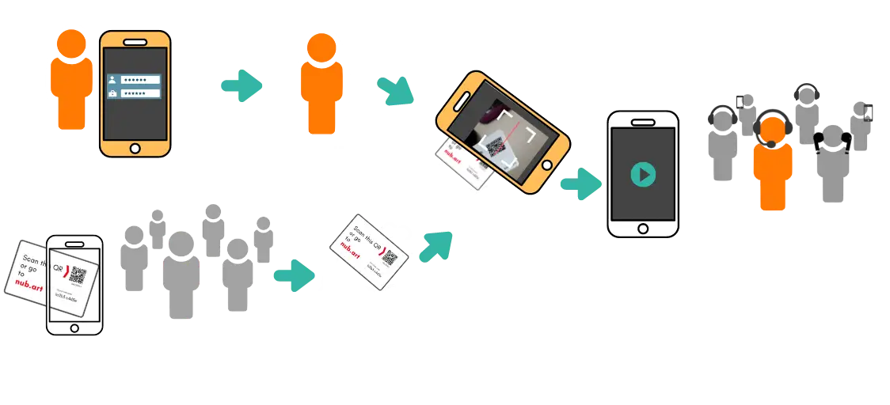

ヌバートLIVEの仕組み - 基本コンセプト

ガイドとして、スマートフォンでグループを開きます。参加者が参加します。 お話しください。
Nubart LIVEがツアーでどのように機能するか、ぜひご覧ください。
無料トライアルキットをご請求ください
参加者ごとに専用コードを用意する理由
共通のQRコードやPINを使用するシステムとは異なり、 Nubart LIVEでは各参加者に固有で譲渡不可のアクセスコードを提供します。
すぐに開始可能：一つの端末に人が集まる必要はありません。各参加者が自分のコードをスキャンするだけで、全員が同時に利用を開始できます。
安心して個別に再接続：接続が切れても、再度スキャンするだけで簡単に復帰できます。ガイドの手を煩わせることも、ツアーを中断する必要もありません。
ガイドによる確実な管理：参加できるのは招待された方のみ。他グループとの混線や無断参加を防ぎます。
参加者が既に所有されているデバイスで動作します
スマートフォンをワイヤレスツアーガイド受信機に変えます
簡単にご利用いただけます
参加者とガイド双方がカード上の固有QRコードをスキャンするだけです。登録やアプリのダウンロードは不要です（ガイドのみ登録が必要です）。
お手頃価格
基本パッケージ（カード500枚）は、ツアーガイドシステムのレンタル費用よりも低価格であり、 多くのツアーにご利用いただけます。
匿名性
Nubart LIVEをご利用いただくにあたり、参加者が個人情報を提供する必要はございません。 完全に匿名でご利用いただけます。

ガイドへの質問
参加者はガイドの進行を妨げることなく、いつでも質問を送信できます： ガイドは蓄積された質問リストを随時確認可能です。
衛生面
従来のツアーガイド用ヘッドセットは、使用のたびに消毒が必要です。当社のカードは違います！
持続可能で廃棄物ゼロ
電子機器は電子廃棄物を発生させ、リチウム電池を使用します。当社のカードは FSC認証の段ボールに印刷され、CO2排出量を相殺しています。
Nubart LIVEの活用事例をご覧ください
活用事例

工場見学
工場内を非常にコスト効率良くご案内いただけます：
スマートフォンの指向性マイクと組み合わせることで、Nubart LIVEは騒がしい環境でのツアーに最適です。

市内観光
Nubart LIVEは、フィールドトリップやガイド付き市内観光向けのシンプルで手頃な無線通信システムです：
交通騒音を気にせず、
参加者が離れてもご安心ください。

アクセシビリティ
Nubart LIVEは、より包括的な体験を実現します：
ツアー中にスマートフォンでヘッドホンを使用することで、
聴覚に障害のある方々の体験が大幅に改善されます（背景騒音による干渉がなく、音量調整が可能です）。
工場・プラント見学に最適
工場見学の課題を解決
騒がしい製造環境ではコミュニケーションが困難です。 従来の無線ガイドシステムは購入・レンタル費用が高く、継続的なメンテナンスが必要で、 多言語グループへの対応が容易ではありません。
工場がNubart LIVEを選ぶ理由：
- 高度なノイズ抑制- 騒がしい工場内でもクリアな音声を実現
- オプションの指向性マイク- 厳しい環境下でも音声品質を向上
- 従業員研修・オンボーディング- 国際的な従業員を母国語で研修
- VIP参加者のプライバシー保護- 匿名参加が可能で、機密性の高い見学に最適です
- 周波数制限なし- 免許制無線システムとは異なり、インターネット経由で 世界中でご利用いただけます
- 不定期利用- 毎日のツアーではなく、四半期ごとの投資家訪問に最適です
工場における主な活用事例：
- 投資家・ステークホルダー向けツアー
- 新入社員オリエンテーションおよび安全研修
- 参加者向け工場見学
- 展示会ブースでのデモンストレーション

AI翻訳アドオンで言語の壁を打破
オプションのAI搭載同時通訳機能

国際的な観光客向けのツアーをご案内されていますか？ 通訳者を雇うことなく、1人のガイドが 多言語グループに対応できるようになりました。
オプションのAI翻訳アドオンはNubart LIVEとシームレスに連携します：
- 参加者は同じQRコードをスキャンしますが、35以上の言語オプションからお好みの言語を選択できます
- 元の言語で自然な音声をお聞きいただけます
- または画面上にテキストと音声の両方でリアルタイムAI翻訳を受け取れます
- 参加者がご自身の言語で質問を記入された場合、 質問は自動的に翻訳されます
一つのツアーで複数の言語に対応。追加のガイドは不要です。
Nubart LIVEのAI翻訳アドオン付きデモ
音声付きで動画を再生してください！
料金 & コスト計算ツール
シンプルで透明な料金体系。数秒で見積もりを作成できます。
QRコードカード
買い切り · ガイド無制限 · サブスクなし

PDF · 印刷してすぐ使える
最短1日で納品
+ €1.50/コード · 最小50枚

500枚の印刷済みカード
2〜3日で発送

3,000枚以上 · 独自ブランディング
30日で発送
数量割引あり
AI翻訳アドオン
- 35以上の言語にリアルタイム対応（音声・テキスト）
- 価格はガイドのストリームごと、言語数ではありません
- リスナー無制限 — 訪問者ごとの料金なし
- 翻訳がオンのときのみ請求
- ガイドがいつでもオン/オフ可能
メディアライブラリ
ガイドがリモコンで参加者の画面にマルチメディアコンテンツを送信できます。ルートごとに1ライブラリ。
コスト見積もり
数クリックでNubart LIVEの見積もりを作成
ステップ 1/4
どのカードパッケージが必要ですか？
ステップ 2/4
メディアライブラリは必要ですか？
メディアライブラリを使うと、ガイドはツアー中にリモコンで画像・動画・ドキュメントを参加者の画面に送信できます。ルートごとに別々のライブラリを作成できます。
ステップ 3/4
AI翻訳アドオンは必要ですか？
35以上の言語にリアルタイム対応。€39/ストリーム時間（翻訳が有効なガイド1名あたり）。
Nubart LIVEのAI翻訳を初めて使用しますか？
あなたの見積もり
コスト概要
見積もり依頼の準備ができました
以下のテキストをコピーしてメールクライアントに貼り付けるか、設定済みのメールアプリがある場合は メールアプリで開く ボタンをご利用ください。
ガイドについてご質問がございましたら、お気軽にお問い合わせください
一般的なツアーガイドシステム（機器）の多くは、
参加者が質問することを許可していません。
一方、プッシュ・トゥ・トークボタンを備えたシステムでは、参加者がグループ全体に向けて質問を放送できます。しかし、内気な参加者はガイドの進行を妨げることを躊躇するかもしれません。また、大胆な参加者がツアーを支配し、延々と質問を続けることで、全員の体験を悪化させる可能性があります。
Nubart LIVEは、ガイドのスマートフォンに質問を集約し、適切なタイミングで回答できる
負担のない方法を提供します。
同時通訳モジュールをご購入いただいている場合、質問は自動的に翻訳されます。
参加者

ガイド

信頼されている


よくあるご質問
よくあるご質問
ご利用開始
ツアー中
ガイドとしてグループを開設する際は、遅れて参加される方のために、 数枚余分にカードをスキャンしておくことをお勧めいたします。
遅れて参加された方には、事前にスキャン済みのカードをお渡しください。 それだけで、すぐにグループに参加できます。
グループを終了した後、それらの予備のカードは次のツアーで再利用できます。カードは参加者が自身でスキャンした時点で初めて譲渡不可となり、ガイドがスキャンした時点では譲渡可能です。
遅延はスマートフォンの性能、接続品質、参加者が同じモバイル通信事業者を利用しているか否かによって影響を受けます。
ただし、ガイドが小声でお話しになる場合、遅延はほとんど気にならない程度です。 参加者の皆様には、主にスマートフォンから増幅された声が聞こえ、 ガイドの自然な声の反響はほとんど聞こえません。
通話中はグループは接続されたまま保留状態となります。通話終了後はブラウザに戻ってください。一部の参加者の表示が緑色ではなく赤色になっている場合は「再読み込み」をタップしてください。全員のQRコードを再スキャンする必要なく再接続されます。
ご注意：Android端末では、通話応答前にミュートを忘れた場合、参加者に通話内容が聞こえる可能性があります。iPhoneでは音声は聞こえません。
AI翻訳アドオン
詳細はご利用手順をご覧ください。
実際の現場では、こうした間に合わせの構成は決まったパターンで破綻します。翻訳は交互方式です。ガイドが話し、待ち、アプリが翻訳を再生する——説明のたびに所要時間が倍になります。一度に再生できるのは一つの言語だけなので、多国籍の混成グループには対応できません。スピーカーで音声を流せば周囲の騒音と競合し、関係者以外にも聞こえてしまいます——機密性の高い製造エリアでは深刻な問題です。また、参加者が各自のアプリを操作する方式では、一人ひとりが別のタイミングで別の翻訳を聞くことになり、グループとしての同期は一切取れません。
Nubart LIVEは、まさにこの状況のために設計されたシステムです。ガイドがスマートフォンに一度話すだけで、全参加者が同じライブ音声を、各自のスマートフォンとイヤホンで同期して受信します——アプリのダウンロードも、共有スピーカーも不要です。オプションのAI同時通訳を使えば、参加者はそれぞれ自分の言語を選び、ガイドが途切れずに話し続ける間、連続した翻訳音声を聞くことができます。さらに参加者はガイドに文章で質問を送ることができ、質問はガイドの言語に自動翻訳されます。
個人向けの翻訳アプリは、旅行先で道を尋ねるには最適です。しかし、騒がしい工場内で30人を5か国語で案内するのは、まったく別の仕事です——そのために設計されたシステムが必要です。
技術的な詳細
ただし、これはグループメンバーには影響しません。 メンバーのバッテリー消費量は、ポッドキャストやオーディオブックを聴く場合と ほとんど変わりません。例えば、4年前のAndroidスマートフォンで1時間連続使用しても、 バッテリー消費量は約8%です。
Nubart LIVEはあらゆる標準的なホットスポット機器とSIMカードに対応しています。予算と目的地に最も適したハードウェアと データプランを自由に選んでいただけます。このアプローチは、グループにローミング料金が発生する可能性がある海外からの 参加者が含まれる場合、モバイル回線の電波状況が不安定な地域でのツアーを行う場合、または参加者ごとの料金プランや 通信事業者に関わらず安定した接続を確保したい場合に特に効果的です。
翻訳を有効にした複数日のツアーや大人数のグループを運営する場合は、それに応じたデータプランを選ぶことをお勧めします。 または、通常わずか数ユーロ多く支払うだけの無制限オプションを選択すれば、ツアーの途中でデータが切れる心配がなくなります。
カード
ご希望の画像、ロゴ、その他の要素をお送りいただければ、当社のデザイナーが複数のデザイン案を作成し、お選びいただけます。
Nubart LIVEの価格についてはこちらをご覧ください
個別デザインをご希望の場合、最低注文数は3,000枚となります。
Nubart LIVEの価格をご確認ください
ツアー開始時の混雑なし：25名が小さなスマートフォン画面をスキャンするために列を 作る代わりに、各参加者が自分のカードを個別にスキャンします。ガイドはカードを配布する前に事前 スキャンを行い、グループをあらかじめ編成することも可能です。
セッションの復旧：観光客は写真撮影、メッセージの確認、他のアプリの使用のために ブラウザを頻繁に離れます。共有デジタルコードでは接続が切れてガイドを中断させなければなりません。 Nubart LIVEカードがあれば、再スキャンするだけで即座に再参加できます。ガイドの助けは不要です。
アクセス制御：PINを知っているまたはQRコードを見た誰でも参加できるシステムとは 異なり、Nubart LIVEはガイドにグループのメンバーを完全に管理する権限を与えます。招かれざる 聴衆もなく、同じ場所での複数のツアーグループ間の混乱もありません。
カードなしのオプションが必要ですか（自発的なイベントや一回限りのイベント向け）？印刷可能な QRコードシートについてお問い合わせください。同じ固有のコードが数分でご利用いただけます。
料金
団体ツアーの変革をお考えですか？
Nubart LIVEをリスクフリーでお試しください。30分間の無料AI翻訳付きトライアルキットをご用意しております。
無料トライアルキットをご請求くださいクレジットカード不要テスト期間中も完全サポート